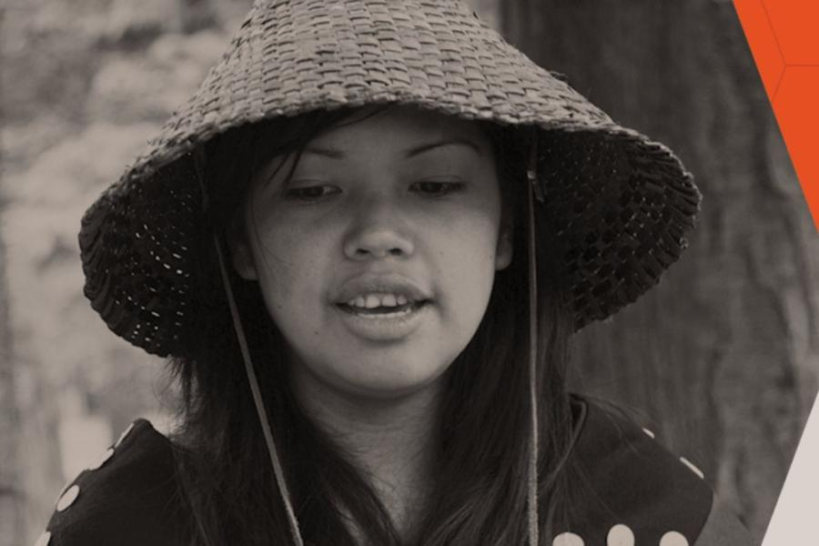
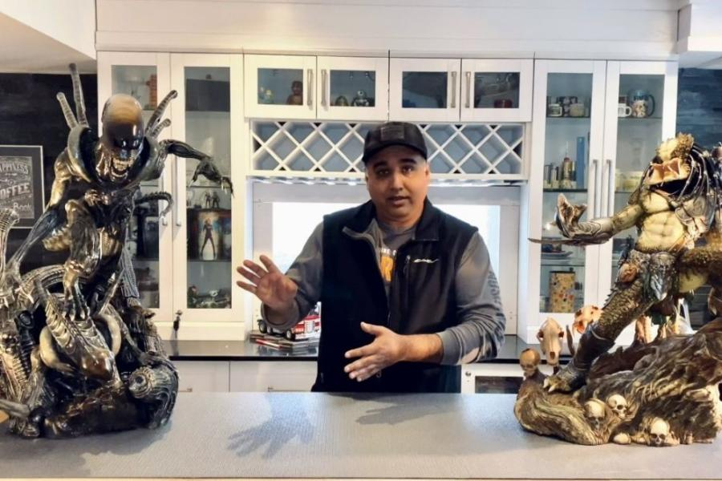
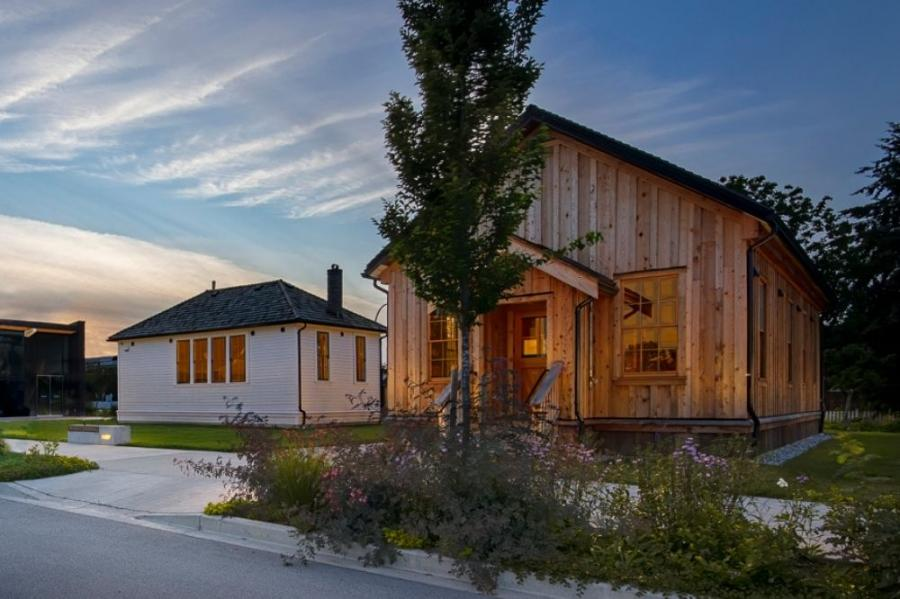
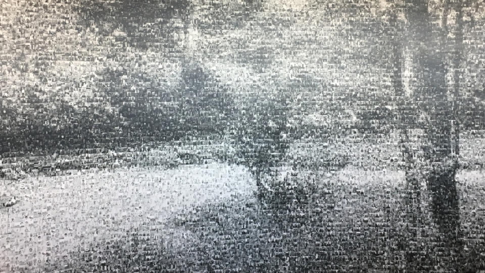

Museum of Surrey
Museum of Surrey is situated on the unceded and ancestral lands of the Salish peoples, including the q̓ic̓əy̓ (Katzie), q̓ʷɑ:n̓ƛ̓ən̓ (Kwantlen), and se’mya’me (Semiahmoo) Nations. We honour and respect these territories and are thankful to be here.
Our Mission is to ignite young imaginations and connect Surrey's diverse citizens and communities. We contribute to community life by celebrating Surrey’s past, present and future through innovative, dynamic and delightful learning, storytelling, and creating shared experiences.
Explore exhibits throughout the year that focus on the people of Surrey, community partners, current affairs and fun, interactive learning. Exhibitions and programs always relate to the residents of Surrey with subject matter that includes Indigenous learning, immigration, Surrey’s diverse communities. Read More
Upcoming Exhibitions
-
Making Histories: Mar 24 - Mar 27
-
Minimal Colours: Mar 31 - Apr 3
-
Fright Night: Apr 7
-
Natures Walk: Apr 11
-
Bone Health: Apr 12
- Jurassic Dinosaur: April 15
Some Interesting Highlights at Surrey Museum
Indigenous Hall
The Indigenous Hall is a space of gathering, storytelling and exhibition that is governed by se’mya’me (Semiahmoo) First Nation, q̓ʷɑ:n̓ƛ̓ən̓ (Kwantlen) First Nation and q̓ic̓əy̓ (Katzie) First Nation.All exhibitions are displayed with their approval. The Indigenous Hall will evolve and change as relationships grow and strengthen. It is a dynamic, living space for everyone to enjoy. Hall produced by Katzie First Nation, Kwantlen First Nation and Semiahmoo First Nation.
Community Treasures
Community Treasures exhibits are an opportunity for community groups, individuals, and cultural organizations from Surrey to showcase their treasures and share their stories with a wider audience. These exhibits are temporary, and submission based. They serve to increase access to Surrey’s diverse stories and experiences. Visitors get to view items that would normally be unavailable to see elsewhere in the community.
Heritage Campus
In recent years, both Museum of Surrey and the Cloverdale Library have been renovated and expanded. The iconic 1881 Town Hall and Anniedale School were also relocated to the campus, where they underwent restorations to be used once again. You can also enjoy the virtual tour of Heritage Campus by getting the tickets from the ticket counter
Photo Mural Project
Displayed on the wall along the staircase, the 46 feet by 15 feet mural showcases Surrey and its many faces. A true community collaboration, the mural features over 2,000 photos submitted by members of the public. Historic Surrey photos are also included. From far away, the mural looks like a river which leads to the new Indigenous Hall. The river theme reflects the 1400 kilometres of rivers and streams from Surrey’s geography.
